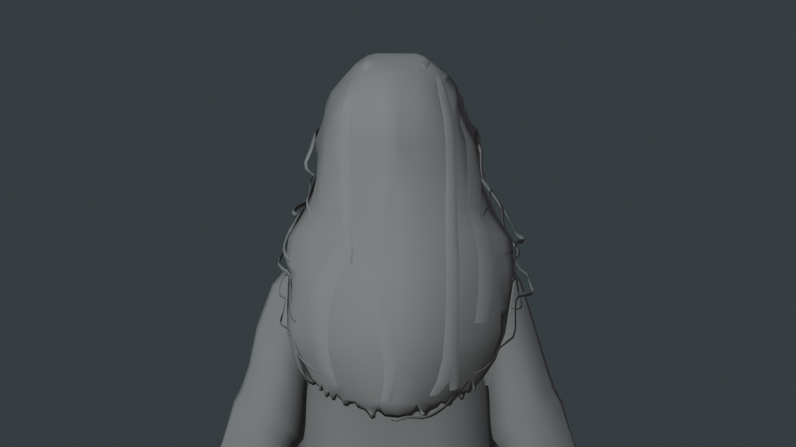
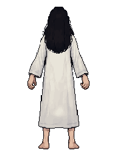

主角：国内版 P2.0 灰模检查
2026-11-06。已恢复主角制作。本轮使用项目自有正面＋修正背面，在国内版有效专业订阅期间新生成一个私有模型。先看灰模形体，不是已认可角色，也不是可直接绑定的成品。
原始 GLB · Blender 检查工程 · 检查说明与限制
实际 OBJ：2486 四边面＋534 三角面；GLB：5506 三角面。当前无 UV／骨架。后发主体更完整，但仍有细碎侧发；源文件带地面底板，手脚仍需整理。保留四边面的 OBJ。
实际导入 Blender 的四视图
后发局部

检查旧 H2.5 曾出现的碎裂、尖片、穿插问题。
本轮实际上传的两张原创参考
 已确认正面 v2。
已确认正面 v2。
修正后的背面 v2。侧面只作本地工作参考，未上传；没有上传 Pixel Canals 或 INSIDE 内容。灰色是检查用显示，不是最终像素贴图。正式材质仍沿用 PixelLab 主制作＋Aseprite 局部精修流程。